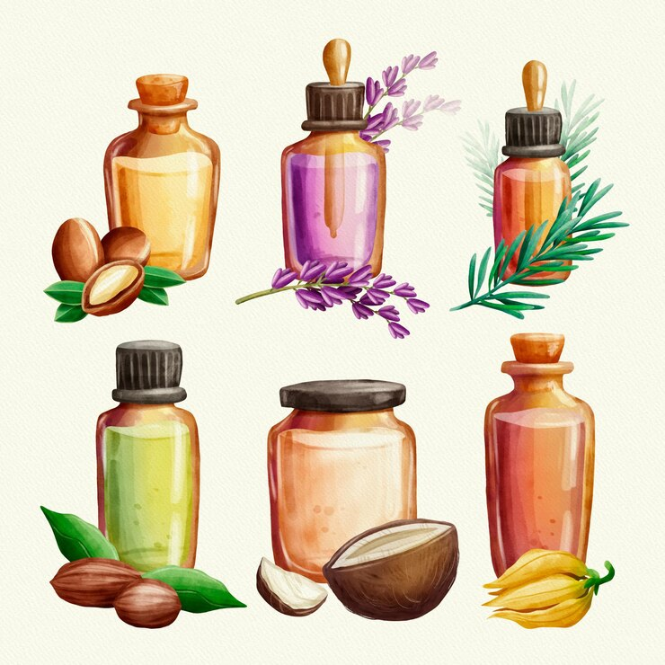
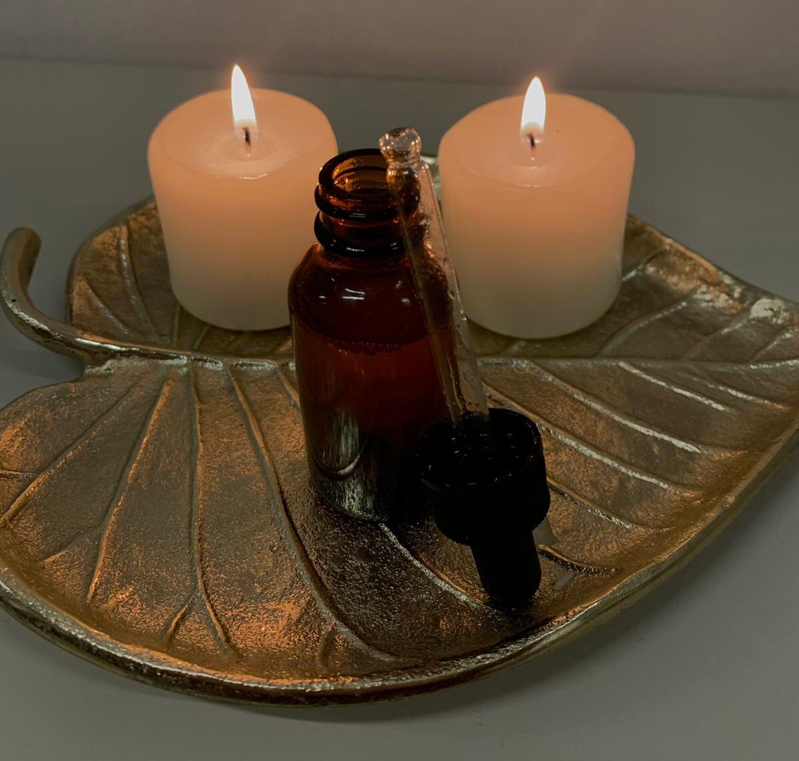
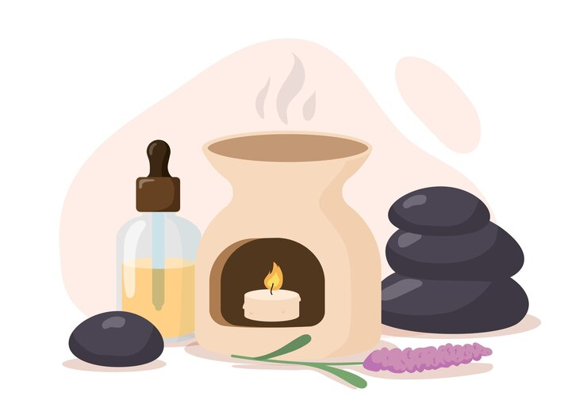

Bem-vindo(a) ao Guia de Óleos Essenciais
Explore o poder dos óleos essenciais para aromaterapia, cuidados com a pele e bem-estar geral. Descubra receitas de óleos corporais caseiros e técnicas de massagem.
Benefícios dos Óleos Essenciais
Descubra como os óleos essenciais podem melhorar a saúde e o bem-estar, desde propriedades terapêuticas até o uso em aromaterapia e cuidados com a pele.
Receitas de Óleos Corporais
Aprenda a fazer óleos corporais naturais e caseiros com ingredientes como canela, coco e outros óleos essenciais, ideais para massagens e cuidados com a pele.
Como Fazer seu Próprio Óleo Essencial
Explore nosso guia passo a passo para criar seus próprios óleos essenciais em casa, utilizando métodos simples e ingredientes naturais.
Ver MaisSobre Nós
Somos apaixonados por óleos essenciais e aromaterapia. Nosso objetivo é compartilhar conhecimento sobre os benefícios dos óleos naturais para uma vida mais saudável e equilibrada.